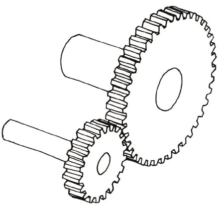
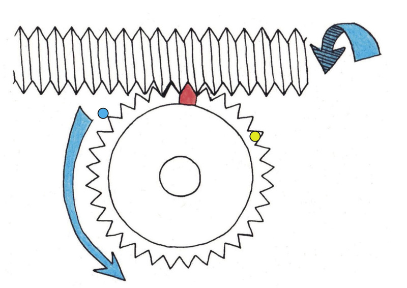

Ratte
In hierdie hoofstuk hersien jy reguittandrat stelsels en hoe hulle gebruik kan word om die rigting, spoed en draaikrag van rotasie te verander. Jy gaan die aantal omwentelinge, rotasiespoed en draaikragte bereken.
Jy gaan ook ander soorte ratstelsels ondersoek, naamlik keëlratte, kleinrat-en-tandstang stelsels, en wurmrat stelsels. Hierdie ander soorte ratstelsels maak dit moontlik om die rigting van rotasie te verander op maniere wat reguittandratte nie kan doen nie.

Rigting van rotasie van reguittandratte
Kontrarotasie en tussenratte
-
Hoeveel tande het elkeen van hierdie ratte?
-
Die swart rat word kloksgewys gedraai totdat die geel kol die posisie wat in figuur 4 gewys word, bereik. Trek pyltjies langs figuur 4 om te wys waar die blou en rooi kolle sal wees.

Figuur 3 -
In watter rigting het die blou rat gedraai?
Figuur 4 -
Deur watter deel van 'n volle omwenteling het elke rat gedraai?
-
Die blou en swart ratte in die situasie hierbo draai in teenoorgestelde rigtings. Dit kan ook beskryf word deur te sê dat die twee ratte teenroteer.
-
Die donkerblou rat aan die linkerkant hieronder word antikloksgewys deur twee derdes van 'n volle omwenteling gedraai. Wys met behulp van pyltjies waar elk van die geel kolle daarna sal wees.

Figuur 5 -
As die rooi rat hieronder antikloksgewys gedraai word, in watter rigting sal die grys rat draai?

Figuur 6: Teenrotasie -
In die situasie hieronder, dryf die rooi rat die blou rat aan, en die blou rat dryf op sy beurt die grys rat aan. Indien die rooi rat kloksgewys gedraai word, in watter rigting sal die grys rat draai?

Figuur 7: 'n Blou tussenrat -
Indien die rooi rat in die stelsel hierbo 'n volle omwenteling maak, hoeveel omwentelings sal die blou rat maak, en hoeveel omwentelings sal die grys rat maak?
Aantal rotasies van dryfratte en gedrewe ratte
Veronderstel die rooi rat in figuur 8 dryf die klein, grys rat aan. Die rooi rat het 18 tande en die grys rat het 6 tande. Vir elke 1 rat in die grys rat, is daar 3 tande in die rooi rat.

Wanneer ân rat een volle omwenteling maak, kan ons ook sê dat dit een volle revolusie maak.
-
Indien die rooi dryfrat een volle omwenteling antikloksgewys maak, hoeveel omwentelinge sal die grys gedrewe rat maak, en in watter rigting?
-
Indien die rooi dryfrat een volle omwenteling antikloksgewys maak, hoeveel omwentelinge sal die grys gedrewe rat maak, en in watter rigting?
-
Hoeveel omwentelinge moet die rooi rat maak vir die grys rat om 12 omwentelinge te maak?
-
In 'n ander ratstelsel het die dryfrat 20 tande en die gedrewe rat 80 tande. Hoeveel volle omwentelinge sal die gedrewe rat maak indien die dryfrat 20 volle omwentelinge maak?
Rotasiespoed van dryfratte en gedrewe ratte
Veronderstel die klein rat in figuur 9 dryf die groot rat aan. Die klein rat het 20 tande en die groot rat het 40 tande.
-
Indien die klein dryfrat 12 omwentelinge in een minuut maak, hoeveel omwentelinge sal die gedrewe rat in dieselfde tyd maak?
Figuur 9 -
Indien die klein dryfrat in figuur 9, 40 revolusies in een minuut maak, hoeveel omwentelinge sal die gedrewe rat in dieselfde tyd maak?
'n rat 40 revolusies in een minuut voltooi, sê ons dat die rat teen 'n spoed van 40 revolusies per minuut draai. Die afkorting r.p.m. word dikwels gebruik vir "revolusies per minuut".
-
Dink weer aan die situasie in figuur 9. Indien die dryfrat met 20 tande teen 80 r.p.m. draai, teen watter spoed sal die gedrewe rat met 40 tande draai?
-
Indien jy die gedrewe rat in figuur 9 teen 'n spoed van 120 r.p.m. wil laat draai, hoe vinnig sal die dryfrat gedraai moet word?
Ratverhouding, rotasiespoed en draaikrag


n Padroller het 'n groter enjin as 'n sportmotor, maar beweeg baie stadiger.
Hoekom? Om 'n swaar padroller te laat beweeg, moet 'n groot draaikrag toegepas word op die wiele. Indien die uitset rotasiespoed van die wiele baie stadiger is as die inset rotasiespoed van die enjin, dan sal die uitset rotasiekrag baie groter wees as die inset rotasiekrag. 'n Padroller gebruik 'n stel ratte wat die vinnige rotasiespoed van die enjin verander in 'n baie stadige rotasiespoed van die wiele, sodat die draaikrag by die wiele sterk genoeg is om die swaar padroller te laat beweeg.
By 'n sportmotor is daar 'n baie kleiner rotasiekrag by die wiele nodig, omdat die motor lig is. Die stel ratte wat mens gebruik om 'n sportmotor te laat wegtrek, verander ook die vinnige rotasiespoed van die enjin in 'n stadiger rotasiespoed van die wiele, maar nie so stadig soos met die padroller nie. Dus die sportmotor se wiele draai vinniger, maar met 'n kleiner draaikrag.
-
Kyk na die stel ratte in figuur 12. Die dryfrat het 20 tande en die gedrewe rat het 80 tande.
Word die rotasie krag deur hierdie ratstelsel vermeerder of verminder? Verduidelik jou antwoord.
Figuur 12
Hersiening van wat jy in graad 8 omtrent ratte geleer het
Kyk na die stel ratte hier regs. Die groot rat is die insetrat en die klein rat is die uitsetrat.

Elke rat is vas aan 'n as, en die as draai die waaier. Die spoed waarteen die waaier draai word die rotasiespoed van die as genoem.
Wanneer 'n rat met baie tande 'n rat met minder tande aandryf, draai die gedrewe rat vinniger, maar met 'n kleiner draaikrag as die dryfrat.
Wanneer 'n rat met min tande 'n rat met baie tande aandryf, draai die gedrewe rat stadiger, maar met 'n groter draaikrag as die dryfrat.
Ratverhouding word as volg gedefinieer
-
Bereken die ratverhouding van die ratstelsel in figuur 12.
Ratverhouding en "spoedverhouding" is dieselfde ding.
Jy kan ratverhouding op verskeie maniere skryf, byvoorbeeld "2 tot 1", "2:1" of eenvoudig "2".
Draaikrag word ook wringkrag genoem.
-
In figuur 12, indien die insetas teen 120 r.p.m. roteer, teen watter spoed roteer die uitsetas?
-
In figuur 12, watter as sal met die grootste krag draai, die dryfas of die gedrewe as?
Vergelyk draaikrag op die inset- en uitsetasse
In hoofstuk 7 het jy geleer hoe 'n stelsel van hefbome jou 'n meganiese voordeel kan gee om dit makliker te maak om swaar voorwerpe op te hys. Jy gaan nou ondersoek hoe 'n ratstelsel dieselfde kan doen deur 'n klein draaikrag op die insetas te verander na 'n groot draaikrag op die uitsetas.
Kyk na figuur 14 hieronder. Die insetrat (dryfrat) het 9 tande en die uitsetrat (gedrewe rat) het 18 tande. 'n Tou is om elkeen van die asse gedraai.
Neem Kennis: In hierdie hoofstuk sal jy slegs met asse wat dieselfde diameter het, werk. Wanneer die diameter van die asse, waarom die tou gebind is, verskil, sal jy dit ook in ag moet neem om draaikrag te vergelyk.
-
Wat is die ratverhouding?
-
Vir een volle omwenteling van die insetrat, hoeveel omwentelinge sal die uitsetrat maak?
-
Indien jy die inset tou met 2 cm aftrek, hoe ver sal die uitset tou opgetrek word? Teken die uitset tou in die "posisie aan die einde" deel van figuur 14 om aan te dui waar die uitset tou sal wees nadat jy die inset tou met 2 cm afgetrek het.
-
Is die krag wat deur die uitset tou uitgeoefen word groter of kleiner as die krag wat op die inset tou uitgeoefen word? Hoeveel groter of kleiner is die krag?
Wenk: Dink aan die situasie asof dit 'n hefboomstelsel is. Jy weet reeds wat die verhouding tussen die insetafstand en die uitsetafstand is.
-
Indien jy met 'n krag gelyk aan 3 kg by die insetkant aftrek, hoe swaar las sal by die uitsetkant opgehys kan word? Skryf dit hieronder en op figuur 15 neer.
Die 3 kg inset gewig in figuur 15 stel die draaikrag voor wat op die insetas uitgeoefen word. Die uitset gewig stel die draaikrag voor wat deur die uitsetas uitgeoefen word. Jy gaan nou jou antwoord vir vraag 5 toets deur die formules vir ratverhouding te gebruik:
Jy het reeds die aantal tande op die inset- en uitsetratte gebruik om die ratverhouding te bereken as 2:1. Dit kan eenvoudig as 2 geskryf word.
Indien jy die blou gedeelte van die formules herrangskik, kan jy die draaikrag op die uitsetas die onderwerp van jou formule maak:
(draaikrag op uitsetas) = (ratverhouding) × (draaikrag op insetas)
-
Gebruik die formule hierbo om jou antwoord op vraag 5 te toets.
-
Die vrae hieronder handel oor ander ratstelsels met toue om die asse, soortgelyk aan die stelsel op die vorige bladsy:
-
In 'n sekere stelsel het die insetas 6 tande en die uitsetas 18 tande. Indien jy 'n trekkrag van 4 kg op die inset tou uitoefen, wat sal die swaarste las wees wat deur die uitset tou opgehys kan word?
-
In 'n sekere stelsel het die insetas 12 tande en die uitsetas 30 tande. Indien jy 'n las van 75 kg met die uitset tou wil ophys, met watter krag, in kilogram, moet jy aan die inset tou trek?
-
'n Sekere persoon kan slegs met 'n maksimum krag van 25 kg trek. Daardie persoon moet laste van tot 150 kg ophys. Ontwerp 'n ratstelsel wat die persoon in staat sal stel om sulke swaar laste op te hys. Met ander woorde, hoeveel tande moet die inset- en uitsetratte hê?
-
Ander tipes ratte
Keëlratte

Die asse van die twee reguittandratte in figuur 16 is parallel aan mekaar, maar die asse van die keëlratte in figuur 17 vorm 'n 90° hoek met mekaar. Die ratte in figuur 17 is ook anders gevorm as gewone reguittandratte, om hulle beter teen regte hoeke met mekaar te laat werk. Hulle word keëlratte genoem.
Keëlratte word gebruik om die rigting van die rotasie in toestelle soos handbore en voedselmengers te verander.

-
Dink jy dat keëlratte ook gebruik kan word om rotasiespoed te verander? Verduidelik jou antwoord en gee voorbeelde.
-
Hoekom is vinnige rotasie nodig om eiers behoorlik te klits?
-
In 'n spesifieke keëlratstelsel is die ratverhouding 1 tot 12.
-
Die gedrewe rat het 8 tande. Hoeveel tande het die dryfrat?
-
Hoeveel omwentelinge sal die dryfrat maak indien die gedrewe rat 60 omwentelinge maak?
-
Hoe vinnig moet die dryfrat draai om die gedrewe rat teen 36 r.p.m. te laat draai?
-
-
Veronderstel jy wil 'n voedselmenger koop om jou te help om bestanddele te meng wanneer jy koek bak. Watter voedselmenger sal die grootste krag benodig om die bestandele te meng: die menger met 'n ratverhouding van 1:3 of die menger met 'n ratverhouding van 1:30? Verduidelik jou antwoord.
Tandstang ratstelsels

In figuur 20 is daar 'n dopstruktuur wat aan die grond vasgebout is.
-
Wat dink jy is binne die doptruktuur in figuur 20, en waarom is dit daar?
-
In watter rigting sal die hek beweeg wanneer die klein reguittandrat kloksgewys gedraai word (soos vanaf die binnekant van die hek gesien?
Die klein reguittandrat word 'n kleinrat genoem.
Die reguit staaf met tande word 'n tandstang genoem.
As iets in die rondte draai, soos ân wiel, word dit "sirkelbeweging" of "rotasie" genoem.
As iets in ân reguit lyn beweeg, soos ân vallende klip, word dit "liniêre beweging" genoem.

Die klein reguittandrat word 'n kleinrat genoem.
Die reguit staaf met tande word 'n tandstang genoem.
Watter onderdeel van die kleinrat-en-tandstang stelsel roteer?
Watter onderdeel van die kleinrat-en-tandstang stelsel beweeg in 'n reguit lyn?
As die afstand tussen twee naasliggende tande op die tandstang 3 cm is, en die kleinrat 18 tande het, hoe ver sal die tandstang beweeg as die kleinrat een volle omwenteling voltooi?

-
Hoeveel tande het die kleinrat van die stuurstelsel in figuur 24?
-
Watter verskil sal dit vir die motor se bestuurder maak as die kleinrat van die stuurstelsel vervang word met 'n groter een wat 27 tande het?


As die wiel in figuur 26, 32 tande het, hoeveel omwentelinge moet die wurm maak vir die wiel om een volle omwenteling te voltooi?
Draai die wiel vinniger of stadiger as die wurm?
As daar 18 tande aan die wiel is, en die wurm word teen 6 r.p.m. gedraai, hoe lank sal dit die wiel neem om een volle omwenteling te voltooi?
As die wiel 18 tande het, hoe vinnig moet die wurm gedraai word om die wiel teen 3 r.p.m. te laat draai?
Daar is nog 'n nuttige eienskap van wurmratstelsels: die wurm kan die wiel laat draai, maar die wurmwiel kan nie die wurm laat draai nie. Dit is nog 'n rede hoekom wurmratstelsels vir hystoestelle gebruik word.
Verbeel jou jy is in 'n hysbak wat deur 'n gewone reguittandratstelsel opgelig word en daar kom 'n kragonderbreking.
Verduidelik wat sal gebeur en hoekom.
In hoofstuk 6 het jy oor hidrouliese motordomkragte geleer. Daar is ook ander tipes motordomkragte. Gebruik die spasie hieronder om 'n ruwe skets te maak van hoe 'n kleinrat-en-tandstang in kombinasie met 'n sperrat-en-ratpal gebruik kan word om 'n motordomkrag te maak.